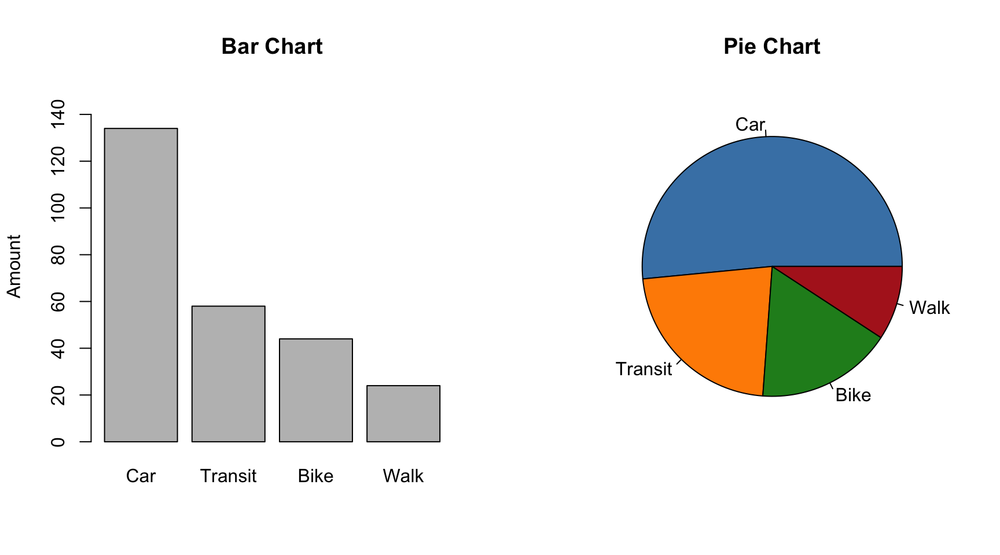
1 Exploring Data
1.1 Overview
In these notes we will look at a few common methods for visualizing data. There are two main types of data we will be concerned with in this class: categorical and quantitative data. Categorical data is when the results are descriptive and can be organized into a finite number of answers (or categories). Examples of categorical data include: favorite color, blood type, methods of transportation, favorite food, etc. Quantitative data is data that is numerical and the numbers are representative of actual amounts. This can include: weights, heights, times, exam scores, etc.
Example 1.1 Discuss with a partner whether the following are categorical or quantitative:
- Age
- Birth month
- Birth year
- Hair color
- Zip code
- Number of siblings
- Jersey numbers (in sports)
- Satisfaction score from 1-5
The tools we use to visualize data depend on whether the data is categorical or quantatative.
1.2 Bar and Pie Charts
Bar and Pie charts are two ways to visualize the distribution of categorical data. Suppose 250 individuals were polled about how they commute to work and the following results were obtained,
| Category | Count |
|---|---|
| Car | 134 |
| Public Transit | 58 |
| Bike | 44 |
| Walk | 24 |
We can visualize this data using either a bar or pie chart.
Creating a bar chart is simple, each categorical variable gets a bar where the height is represented by the number of respondents in the dataset. To create a pie chart, each category gets a slice of the pie proportional to its percent of the responses.
| Category | Count | Percentage |
|---|---|---|
| Car | 134 | 53.6% |
| Public Transit | 58 | 23.2% |
| Bike | 44 | 17.6% |
| Walk | 24 | 9.6% |
Example 1.2 A class of 32 students was surveyed about whether they prefer morning, afternoon, or evening classes. The results are given in the table below.
| Time of Day | Count |
|---|---|
| Morning | 10 |
| Afternoon | 14 |
| Evening | 8 |
To compute the percentage of votes of each category, we divide the quantity by the total number of students, 32.
| Time of Day | Count | Percentage |
|---|---|---|
| Morning | 10 | 10/32 = 31.25% |
| Afternoon | 14 | 14/32 = 43.75% |
| Evening | 8 | 8/32 = 25% |
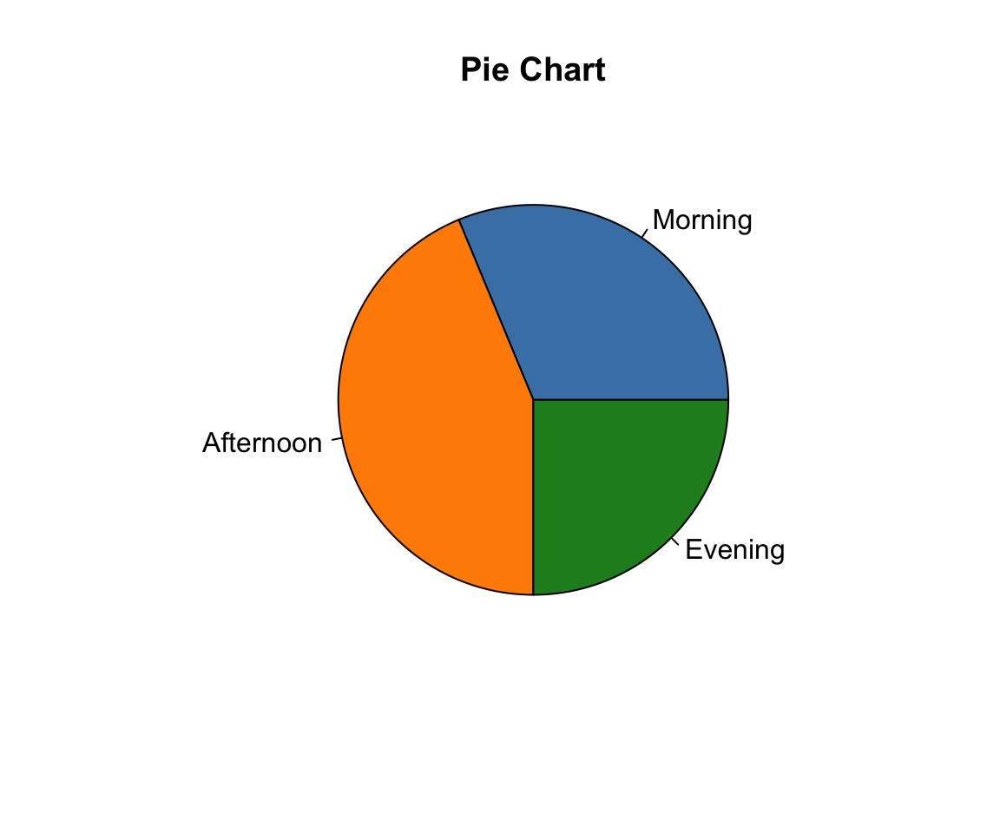
ImportantPicking the Best Visual
In what ways are bar and pie charts similar and in what ways are they different? What are some benefits to a pie chart over a bar chart (and vice versa)?
TipAnswer
A pie chart is better when the main question is about part of a whole, like whether one category is more than half the total.
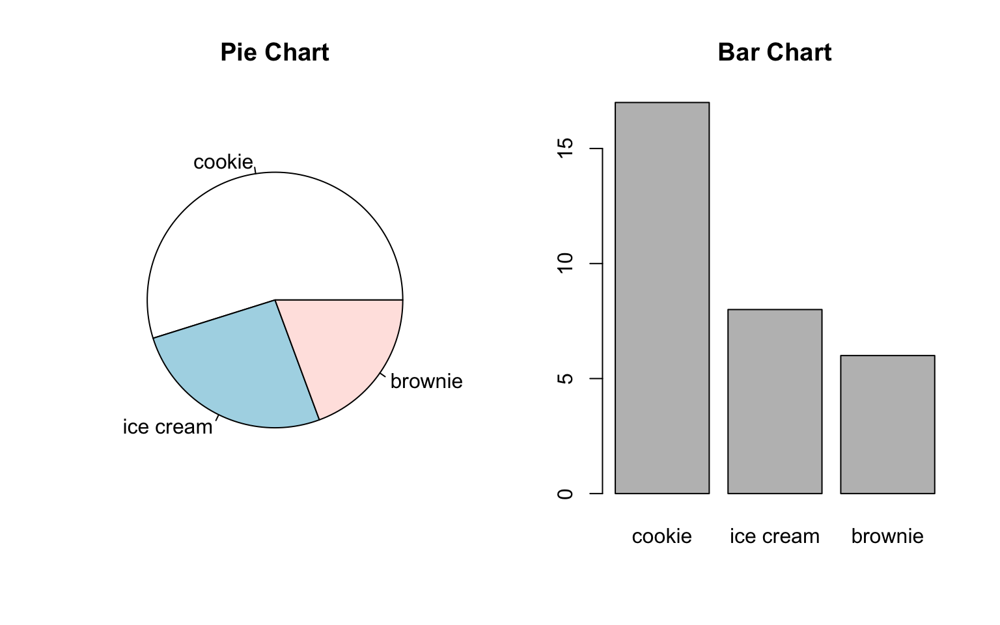
A bar chart is better when we are comparing many close values. For example consider the favorite food of 100 respondents,
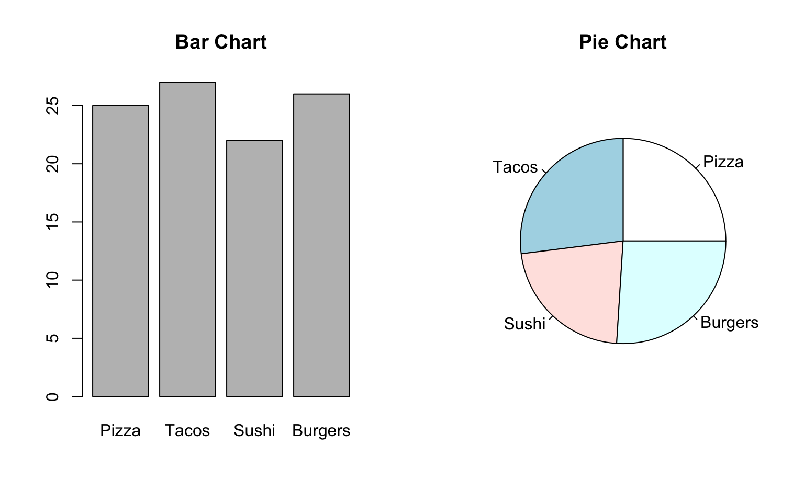
Don’t worry so much about creating a pie or bar chart by hand as we will use technology in this class. The below example explain how to create the graphs using StatCrunch.
Example 1.3 (Basic Visuals in StatCrunch) A company has collected data on 500 customers. Open this dataset in StatCrunch. Use StatCrunch to create a bar chart of customer satisfaction by doing the following:
- Under Graph, select Bar Plot, then With Data.
- In the pop up screen, select the column SatisfactionRating. Set Type to Frequency and then hit Compute!
Next create a pie chart of the customer regions by selecting Graph > Pie Chart > With Data.
1.3 Misleading Visuals
Some visualizations can be misleading! Sometimes this is just poor judgement, but sometimes this can be done to make a specific point.
Example 1.4 (Bad Visualizations) Can you determine what makes these visuals misleading? Do you think it was done to make a specific point?
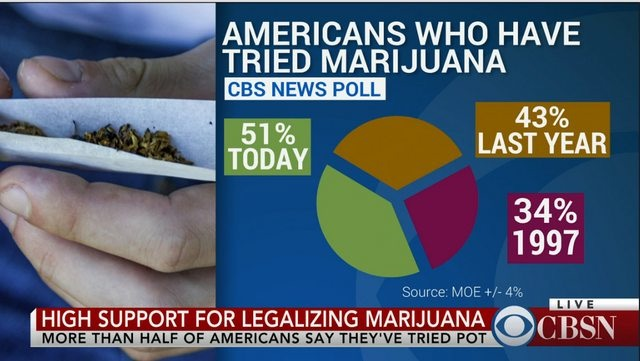
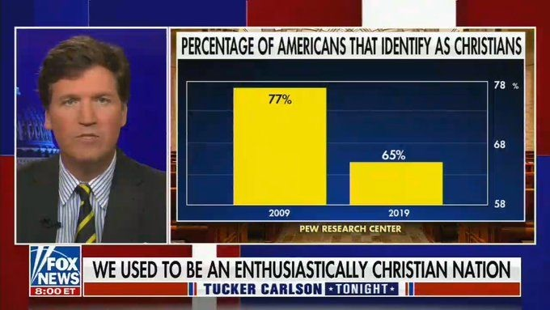
1.4 Histograms
Bar and pie charts are a great way to visualize categorical data. Now we want to address ways to visualize quantitative data, or data that is in the form of numbers.
Example 1.5 (Quantitative Data) Some example of quantitative data include: test scores, age, height, weight, (systolic) blood pressure, etc.
A good way to look at quantitative data is to use a histogram. A histogram breaks the range of all possible values into smaller intervals, then counts how many observation fall into each window. This looks kind of like a bar chart, but the bars sit right next to each other.
Example 1.6 Students in a calculus class obtain the following scores on the midterm exam,
\[100, 85, 91, 76, 88, 82, 95, 62, 84, 79, 90, 73, 87, 81, 92, 77, 86, 83, 80, 89, 74, 93, 85, 79, 82\]
The lowest score is a 62 and the highest score is 100. Let’s break down the range \([60,100]\) into intervals of length 5.
| Interval | Count |
|---|---|
| (60,65] | 1 |
| (65,70] | 0 |
| (70,75] | 2 |
| (75,80] | 5 |
| (80,85] | 7 |
| (85,90] | 5 |
| (90,95] | 4 |
| (95,100] | 1 |
From this we can make a histogram.
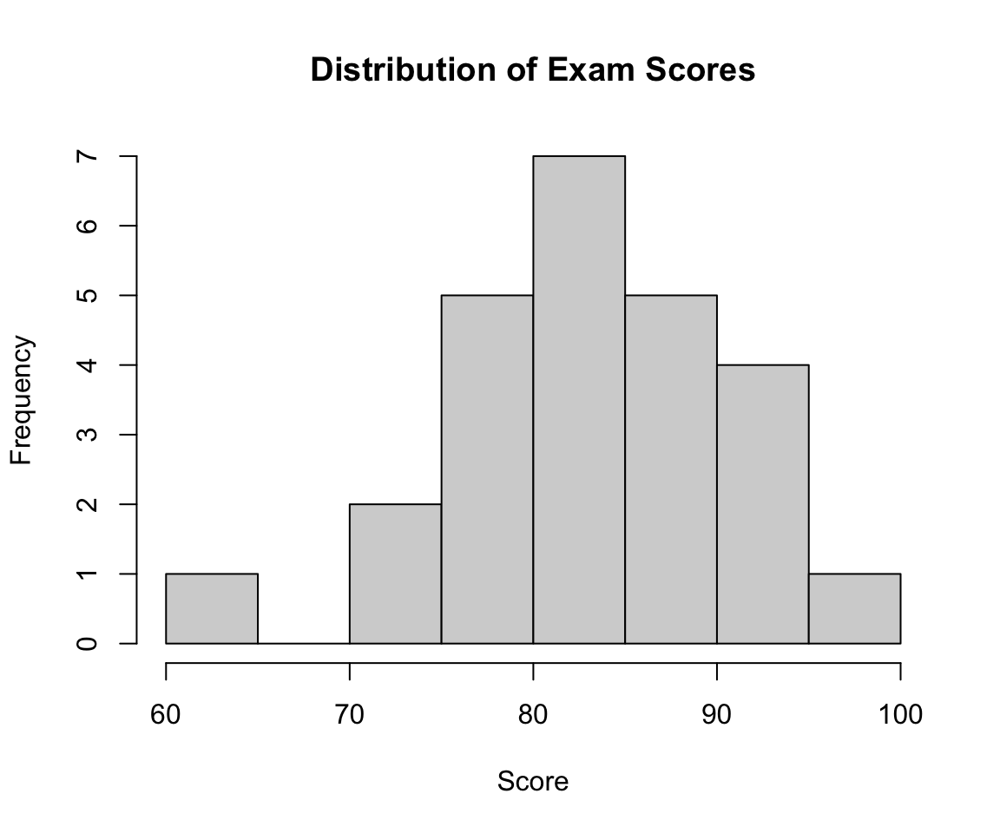
It is typical to call the intervals of a histogram bins, although the reading on WAMAP will call them classes. A histogram should always have bins of the same length. It can be misleading to use different bin lengths in the same way it is misleading to use breaks on the vertical axis of bar charts.
ImportantHistogram Versus Bar Chart
Histogram “bars” touch, while bar chart bars do not. Why do you think this distinction is made?
TipAnswer
Histogram bars touch because the bins cover a continuous range of numbers with no gaps between them. Bar chart bars are separated because each bar is a distinct category, and there’s nothing connecting the categories together.
Most computer programs will set automatic bin sizes based on the distribution of the data you get it, although you will typically have an option to manually input bin specifications. In StatCrunch you are give the optional inputs of the starting value and the bin width.
ImportantBin Endpoints
For whatever computer program you use, make sure you know how the endpoints of your bin intervals are treated. In Example Example 1.6, I wrote intervals like (70,75] which means 70 is excluded from the bin and 75 is included in the bin. The statistical programming language R (what generates the graphs in these notes) uses right inclusive bins, however StatCrunch and Google Sheets use left inclusive bins.
The histograms below represent the same data, just with different bin sizes.
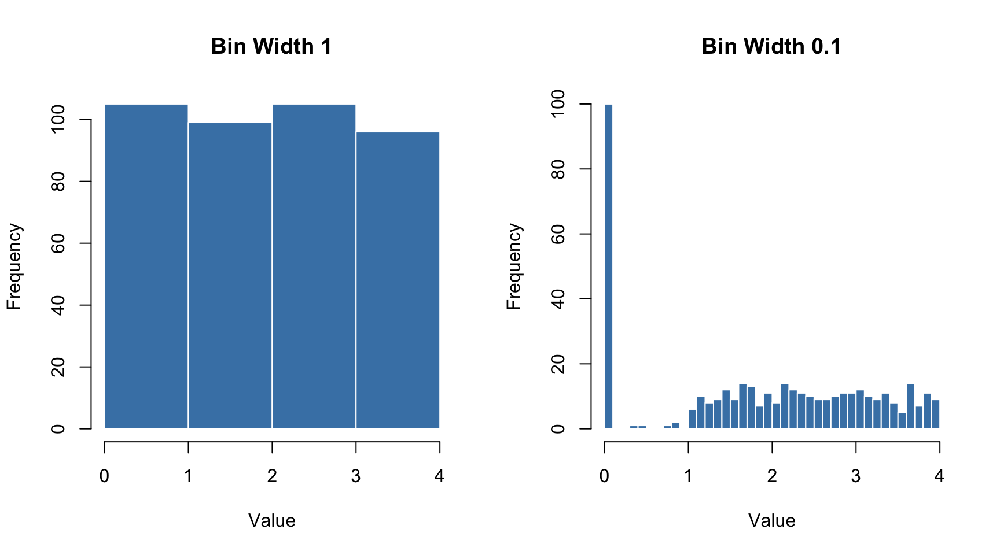
Example 1.7 Discuss the following with a partner or two:
- Which histogram do you think is better for the above data set and why?
- What goes wrong if bins are too wide? What if bins are too narrow?
- Is there one “correct” bin width?
- Could someone manipulate bin size to mislead the public about a dataset?
Example 1.8 (Histograms on StatCrunch) Reopen the customer dataset in StatCrunch. Create a histogram of customer ages by going to Graph > Histogram.
Example 1.9 (High Tide Heights) The following histogram shows 60 high tide heights over the month of July at a beach. What percentage of high tides were more than 2 meters?
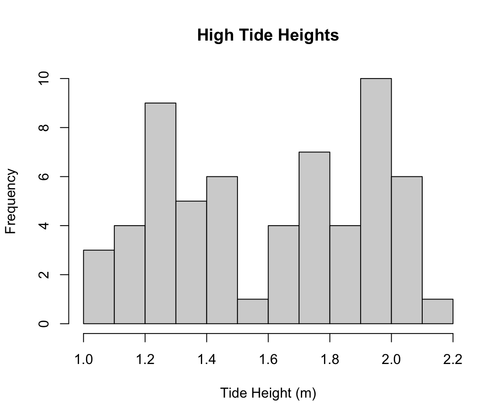
TipAnswer
We want to compute,
\[\frac{\text{high tides over 2 m}}{\text{total number of high tides}}\cdot 100,\]
where multiply by 100 turns the decimal into a percent. The total number of high tides is 60 as stated in the problem. If not given explicitly, we could carefully sum the quantity in each bin.
The number of high tides that were more than 2 meters is given by the total in the last two bins, \(6+1=7\).
\[ \frac{7}{60}\cdot 100 \approx 11.67\%\]
ImportantInformation Lost
What kinds of information do we lose by only seeing a histogram of the data?
We can use words to descibe the shape of distributions. Some common terms are:
- A distribution is symmetric if the left and right sides are roughly mirror images of each other.
- A distribution is skewed right if it has a long tail stretching to the right. Most values are low, with a few unusually high values.
- A distribution is skewed left if it has a long tail stretching to the left. Most values are high, with a few unusually low values.
The direction of the skew is the direction of the tail, not the direction of the peak. A skewed-right distribution has its peak on the left.
We also describe distributions by their number of peaks. A distribution with one peak is unimodal, and a distribution with two clear peaks is bimodal. The symmetric and skewed examples below are all unimodal.
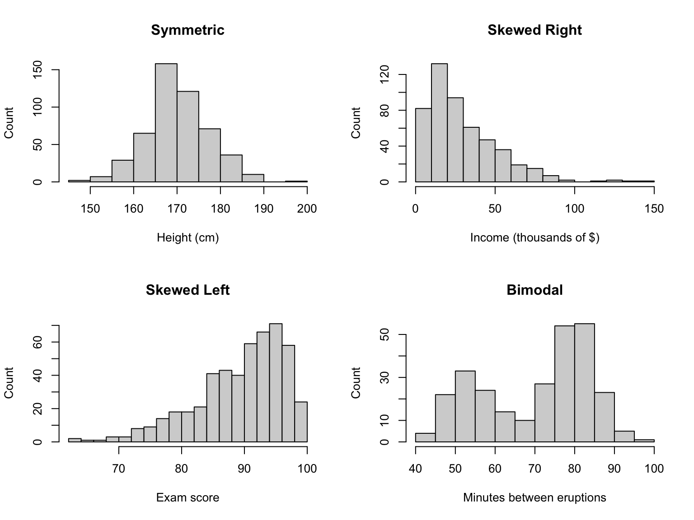
| Shape | Real World Examples |
|---|---|
| Symmetric | Adult heights (for one sex), repeated measurements of the same quantity, standardized test scores |
| Skewed right | Household income, home prices, number of social media followers, time spent waiting in line |
| Skewed left | Scores on an easy exam, age at death in countries with high life expectancy |
| Bimodal | Customers in a restaurant, shoe sizes of a population not separated by gender |
ImportantWhy Bimodal?
A bimodal distribution often means the data contains two different groups mixed together. For the restaurant example, what are the two groups? Can you think of another variable that might be bimodal?
Example 1.10 (Plant Heights) A biology class grew 40 bean plants under identical conditions and measured each plant’s height, in centimeters, after six weeks. The histogram below shows the results.
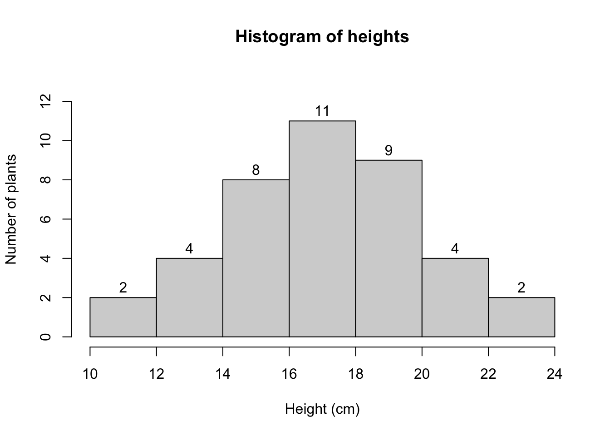
- What is the bin width of this histogram?
- Describe the shape of the distribution. Around what height is the center?
- What percentage of plants grew taller than 20 cm?
- What percentage of plants had heights between 14 and 20 cm?
- Can you tell from the histogram how tall the shortest plant is?
TipAnswer
Each bin covers 2 cm, for example 16 to 18 cm.
The distribution is roughly symmetric: the tallest bar is in the middle, at 16–18 cm, and the bars decrease at about the same rate on both sides. The center is around 17 cm.
The last two bins contain plants taller than 20 cm: \(4 + 2 = 6\) plants. \[\frac{6}{40} \cdot 100 = 15\%\]
The bins from 14 to 20 cm contain \(8 + 11 + 9 = 28\) plants. \[\frac{28}{40} \cdot 100 = 70\%\]
No. We only know the shortest plant is somewhere between 10 and 12 cm. The histogram does not show individual values.